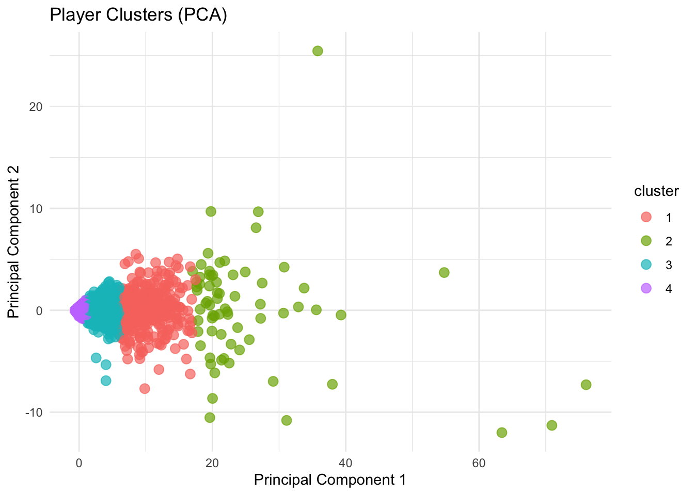
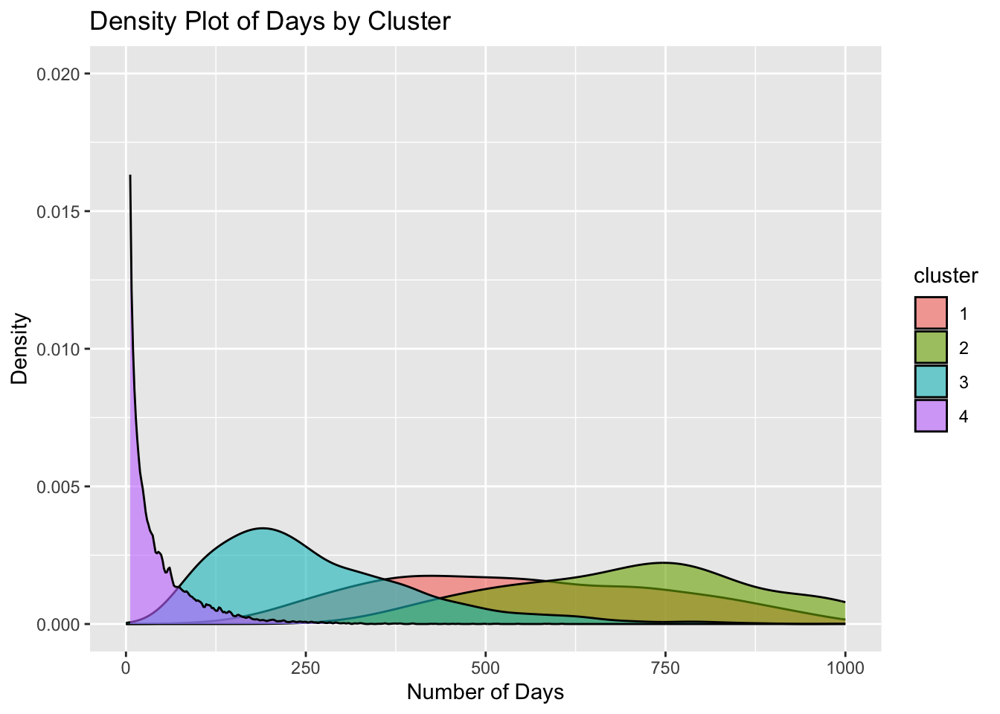

library(tidyverse)
library(ggplot2)
library(plotly)
library(tidyr)
library(patchwork)
library(cluster)
library(factoextra)
library(magick)
library(readr)
##load in lifetimestats
lifetime <- read.csv("PUBGlifetimestats.csv")How to go from Beginner to Elite PUBG Player: The Ultimate Data-driven Guide
The Game
PUBG (PlayerUnknown’s Battlegrounds) is a popular battle royale game where players compete to be the last one standing on a shrinking map by scavenging for weapons, equipment, and vehicles. Around the world, approximately 30 million people play PUBG daily, both for leisure and in competitive settings. Through a data-driven analysis of PUBG player statistics obtained via the PUBG API, this blog aims to provide actionable insights on how to become an elite PUBG player. Enhancing player performance not only enriches the gaming experience but also fosters increased engagement, as players are more likely to continue playing when they excel. This guide is valuable not only for players but also for game developers, as it offers insights to improve gaming experiences and boost retention and engagement metrics for PUBG and similar battle royale games.
The Data
Through the players’ lifetime statistics, which provide critical insights into their performance throughout their PUBG journey—such as wins, matches played, and survival rates—we decided to use clustering techniques to uncover underlying patterns among the players. Our assumption is that players naturally group into distinct clusters that reflect varying levels of performance in the game.
## Make accountID rowname because it is identifier and should not be used in clusterng
lifetime <- lifetime %>%
mutate(uniqueId = make.unique(as.character(accountId)))
cluster_data <- lifetime
rownames(cluster_data) <- NULL
cluster_data <- cluster_data %>%
column_to_rownames("uniqueId") %>%
select(kills, assists,damageDealt,timeSurvived, wins)
##Normalize the data
cluster_data_scaled <- scale(cluster_data)
##elbow method to find the optimum number of clusters
# fviz_nbclust(cluster_data_scaled, kmeans, method = "wss") +
# labs(title = "Elbow Method for Optimal Clusters")
# Set the number of clusters (e.g., k = 3)
k <- 4
# Run k-means clustering
kmeans_result <- kmeans(cluster_data_scaled, centers = k, nstart = 25)
# Add cluster assignments to the original data
cluster_data$cluster <- as.factor(kmeans_result$cluster)Using the elbow method we found that the optimum number of player clusters for this dataset was 4 and then used k-means clustering to identify these clusters. The further understand what each cluster of players would be we ran summary statistics on each cluster.
# Summarize metrics by cluster
cluster_summary <- cluster_data %>%
group_by(cluster) %>%
summarize(
avg_kills = mean(kills, na.rm = TRUE),
avg_assists = mean(assists, na.rm = TRUE),
avg_damageDealt = mean(damageDealt, na.rm = TRUE),
avg_timeSurvived = mean(timeSurvived, na.rm = TRUE),
avg_wins = mean(wins, na.rm = TRUE)
)
# View the summary
print(cluster_summary)
## # A tibble: 4 × 6
## cluster avg_kills avg_assists avg_damageDealt avg_timeSurvived avg_wins
## <fct> <dbl> <dbl> <dbl> <dbl> <dbl>
## 1 1 2907. 826. 405750. 1630512. 128.
## 2 2 119. 27.1 16131. 70101. 4.08
## 3 3 23655. 7292. 3195736. 9737638. 1034.
## 4 4 8786. 2499. 1204401. 4388938. 395.Cluster 1: This cluster represents moderately skilled players with a good average performance. They achieve a high number of kills (8,785.91 on average) and assists (2,499.36), deal significant damage (1,204,401.24 on average), and survive for a considerable amount of time (438,938.02 on average). Their average win count (395.11) is also solid, reflecting consistent gameplay.
Cluster 2: This is the cluster of top-tier, elite players. They exhibit exceptional statistics across all metrics, with an extremely high average number of kills (23,655.20), assists (7,292.40), damage dealt (3,195,735.56), and survival time (9,737,637.51). Their average wins (1,034.33) indicate dominant success in matches.
Cluster 3: This cluster contains beginner or casual players with relatively low stats. They achieve significantly fewer kills (118.76 on average) and assists (27.13), deal minimal damage (16,130.62), and survive for shorter durations (70,101.48 on average). Their average win count (4.08) suggests limited success in the game.
Cluster 4: This cluster represents intermediate players who are improving but not yet at the elite level. They achieve a moderate number of kills (2,907.45 on average) and assists (826.26), deal a decent amount of damage (405,749.88), and survive for a fair duration (1,630,512.28 on average). Their average win count (128.06) suggests steady game-play with room for improvement.
In short
Cluster 1 - Higher performers
Cluster 2 - Elite performers
Cluster 3 - Beginners
Cluster 4 - Intermediate performers
To visualize this clusters on a 2-dimensional plot we decided to make use of a Principle Component Analysis: Principal Component Analysis (PCA) reduces the dimensionality of the PUBG player data. PCA helps summarize the variance in the data by creating uncorrelated components (Principal Components) that capture the most important features.
# Perform PCA for visualization
pca_result <- prcomp(cluster_data_scaled, center = TRUE, scale. = TRUE)
# Create a data frame for plotting
pca_data <- as.data.frame(pca_result$x[, 1:2])
pca_data$cluster <- cluster_data$cluster
# Plot the clusters
ggplot(pca_data, aes(x = PC1, y = PC2, color = cluster)) +
geom_point(size = 3, alpha = 0.7) +
labs(title = "Player Clusters (PCA)", x = "Principal Component 1", y = "Principal Component 2") +
theme_minimal()
Plot Insights:
Players from the same cluster group together, confirming that clustering effectively separated players based on similar performance characteristics.
Higher values of PC1 correspond to better player performance, aligning with the summary statistics. For example, clusters with the highest average stats are found on the positive side of PC1, while clusters with lower average stats are on the negative side.
##Cluster analysis
###density plot
ggplot(data = clustered_players, aes(x = days, fill = cluster)) + geom_density(alpha = 0.6) + xlim(0,1000) + ylim(0,0.02) + labs(x ="Number of Days ")
Tip number 1: Play the game for longer!!
Based on the density plot above we can see the progression from beginner to elite players, with Cluster 3 being the least engaged and Cluster 2 being the most engaged in terms of days played. And therefore The number of days played correlates positively with skill level and performance, as clusters with more days (e.g., Cluster 2) exhibit higher performance stats. The more consistency and the longer you play the more experience and the better you become. It’s a no brainer!
Seasonal Survival Statistics
Since we used lifetime statistics for the classification of player levels, it is important to qualitatively assess our model on a seasonal basis. This evaluation will help us determine whether the model is making accurate distinctions between player levels across different time periods. Specifically, we will analyze player survival performance by level across the six most recent seasons.
In the context of survival games like PUBG, movement is one of the most critical skills for a player’s success. Effective movement not only enhances survival but also plays a pivotal role in strategic positioning, escaping threats, and securing advantageous locations.
To capture this aspect in our analysis, we will primarily focus on average survival time as our dependent variable (y-axis). Average survival time, calculated as the total survival time divided by the number of rounds played, serves as a strong indicator of a player’s ability to stay alive during matches. On the other hand, the independent variables (x-axis) will consist of movement-related features such as average walking distance, riding distance, and swimming distance. These metrics provide insights into how players navigate the game world and adapt to different scenarios.
By examining the relationships between these movement features and survival performance, we aim to identify patterns that differentiate player levels. This approach will also shed light on whether players at higher levels excel not just in combat but also in mobility—a fundamental survival skill in PUBG. Such an analysis will strengthen the understanding of our model’s decisions and its ability to classify players effectively based on meaningful gameplay attributes.
I. Quick Sense Check
df_all_seasons %>%
mutate(avg = wins/roundsPlayed) %>%
filter(avg < 0.5) %>%
ggplot(aes(x = fct_rev(fct_reorder(level, avg)), y = avg))+
geom_boxplot()+
facet_wrap(~season) +
theme_classic() +
theme(axis.text.x = element_text(angle = 45, hjust = 1),
panel.grid.major.x = element_blank())+
labs( y = "win ratio",
x = "",
title = "Boxplots of Win Ratio by Player Level Across Seasons",
subtitle = "*outliers have been removed from plot (<0.5)")

Observations:
The ratio plots match our expectation in terms of player expertise, that is, pro and good players are shown to have higher win ratio medians whereas immediate and beginner players are on the lower end. In contrast, the beginners and intermediates observe higher loss ratios.
Pro and good players are less likely to have outliers.
df_all_seasons %>%
mutate(avg = losses/roundsPlayed) %>%
filter(avg > 0.7) %>%
ggplot(aes(x = fct_rev(fct_reorder(level, avg)), y = avg))+
geom_boxplot()+
facet_wrap(~season) +
theme_classic()+
theme(axis.text.x = element_text(angle = 45, hjust = 1))+
labs( y = "loss ratio",
x = "",
title = "Boxplots of Loss Ratio by Player Level Across Seasons",
subtitle = "*outliers have been removed from plot (>0.7)")Win ratios tend to be a lot smaller than loss ratios. This makes sense because winning a match tends to be harder than losing a match, even for skillful players.
These trends stay consistently over the course of 6 seasons (each lasts for 2 months, so it remains almost static during the span of 1 year)
Conclusion: It appears that our PCA model has successfully grouped players based on relevant indicators. The trends over the 6 seasons sync up with how we expect high level players to perform. Nonetheless, the boxplots also show that the “good” group outperforms the “excellent” group. Perhaps we will need to rethink how we classify the players during the earlier stage.
II. Dive deep into survival tactics
ii.a.Overall Data
df_all_seasons %>%
ggplot(aes(y = timeSurvived/roundsPlayed, x = rideDistance/roundsPlayed))+
geom_point()+
geom_smooth(method = "lm")+
facet_wrap(~season) +
theme_classic()+
labs(y = "Avg Time Survived per Round",
x = "Avg Ride Distance per Round",
title = "Plots Showing Correlation between Avg Time Survived and Avg Ride Distance",
subtitle = "*ride distance means distance player traveled in a vehicle")Observations:
Average walk and ride distances share the same positive correlation with avg survived time, although they do have different slopes: avg walk distance’s slope rises faster.
Average swim distance seems to be independent of avg time survived. The trend lines shown in the plots are influenced by a few outliers
Conclusions:
The positive correlations mean if one is to survive longer, they will have to be on the move constantly. Within the context of PUGB, you will need to consistantly seek good places to hide or find your enemies and good angles to take them down with your weapon. Always moving also protects you in the sense that your enemies become oblivious to your whereabouts. Staying still at one place typically doesn’t help much.
The slope of avg walk distance being higher compared to that of avg ride distance may mean that walking is more likely to increase your chance of survival, compared to riding a transportation mode. While riding helps you places faster, and shields you from incoming bullets, it also informs enemies within proximity of your presence. Once they know your presence but you do not know theirs, the chances of you being hunted down and eliminated are high.
The apparent independence between swimming and surviving is also noticeable. For context, in a map, there will be bodies of water you will have to tread through. There is infrastructure such as bridges but there are usually enemy teams waiting there, ready to eliminate you at any moment, which we call camping. Swimming almost always takes longer time and you are unable to use weapons under water, which makes you vulnerable to someone on higher ground. Perhaps because of this, swimming more is shown to not correlate with surviving more.
ii.b.Drilled down
df_all_seasons %>%
mutate(avg = rideDistance/roundsPlayed) %>%
filter(avg<1000) %>%
ggplot(aes(x = fct_rev(fct_reorder(level, avg)), y = avg))+
geom_boxplot()+
facet_wrap(~season) +
theme_classic()+
theme(axis.text.x = element_text(angle = 45, hjust = 1))+
labs( y = "Avg Ride Distance",
x = "",
title = "Boxplots of Avg Ride Dist by Player Level Across Seasons",
subtitle = "*outliers have been removed from plot (<1000)")
Observation(s):
- Unlike the win/loss ration plots above, the trend isn’t as quite consistent, much of variation happens among the non-beginner groups. However, in general players with experience have a tendency to ride in a car.
Observation:
- During the n-5th and n-6th seasons, it was clear beginners walked less than the other groups. However, during the most recent 4 seasons they seemed to catch up and to the point where they are pretty much indistinguishable from the more experienced groups
Observation(s):
There does not seem to be any significant difference in the avg swim distance for different player levels. The trend stays almost identical for the last 4 seasons
However, it is worth noting that there are far way more outliers for the less skilled groups (intermedite and beginners.
Conclusion:
- Movement patterns are a useful indicator of experience, particularly for identifying trends like increased car usage among skilled players and the narrowing walking distance gap between beginners and experienced players.
Swimming distance appears to have little discriminatory power for classifying player levels due to its uniformity across groups.
The presence of more outliers in beginner and intermediate groups highlights their inconsistent gameplay, which could be a distinguishing factor when analyzing player skill levels.
Seasonal Players’ Weapon Usage Statistic
Moreover, analyzing weapon mastery is crucial for understanding how players of different game play proficiency utilize different weapons to maximize their performance and adapt to various combat scenarios. It highlights trends in weapon preferences across skill levels, providing insights into player progression and game play strategies. For players, this analysis offers guidance on optimal weapon choices to enhance their skills, while for developers, it reveals opportunities to balance weapon attributes, improve game mechanics, and boost player engagement.
I. Ultra Super Simplified Weaponry Analysis
The distribution of weapon preferences highlights distinct trends that correlate with the skill and engagement levels of the players in each group. Below is a detailed breakdown of the observations and insights for each cluster:

- Cluster 1 (Higher Performers):
There is a noticeable preference for versatile and reliable weapons such as the HK416 and Beryl M762. This suggests that higher performers rely on weapons that balance damage, stability, and versatility, which are essential for adapting to dynamic combat situations.
- Cluster 2 (Elite Performers):
The chart indicates that elite players have an overwhelming preference for the HK416, which dominates the weapon usage by total kills in this cluster. This supports the idea that elite players optimize their loadouts with reliable and versatile high-tier weapons to maintain their competitive edge.
The elite performers show a heavy reliance on high-tier weapons such as the HK416, which stands out as the the weapon with the highest number of kills in this cluster as well as for the higher performers in cluster 1. The dominance of this high-performing weapons reflects the skill and precision of these players, who optimize their loadout to maximize their combat efficiency. The significantly higher total kills that were accumulated across the season and players also indicate that elite players are highly effective in engagements while also prioritizing consistent, high-damage outputs.
- Cluster 3 (Beginners):
Beginner players demonstrate a more scattered distribution of weapon usage, but a clear preference for accessible and easy-to-use options like the AKM and Beryl M762. This could reflect a lack of familiarity with more advanced weapons or a tendency to rely on common loot during gameplay. The lower total kills suggest that beginners are less effective in leveraging weapon capabilities to secure eliminations.
- Cluster 4 (Intermediate Performers):
Intermediate players show a gradual shift toward using advanced weapons such as the HK416, similar to the higher and elite clusters. However, their distribution still includes a mix of beginner-friendly and advanced options, indicating a transition phase in skill development and gameplay strategy.
i.a. Pattern Analysis
HK416
Advanced clusters (1 and 2) gravitate toward high-performing weapons like the HK416, reflecting their expertise and preference for weapons that provide consistent performance
Transition into the higher level
Intermediate players (Cluster 4) are starting to adopt weapons preferred by higher-level players, signaling progress in their mastery and understanding of game mechanics.
Beginner Adaptation
Cluster 3 players primarily use simpler weapons, which aligns with their gameplay focus on ease of use rather than optimization.
i.b. Choosing a Weapon
For Beginners:
Focus on mastering beginner-friendly weapons such as the AKM or Beryl M762, which provide a balance of power and accessibility.
For Intermediates:
Experiment with advanced weapons like the HK416 to improve precision and adaptability in combat situations.
For Higher & Elite Players:
Continue refining weapon-specific strategies and explore underutilized options to gain an edge in specific scenarios.
This weapon mastery analysis not only highlights the importance of weapon selection but also emphasizes its connection to player progression and skill development in PUBG. By understanding these trends, players can make informed decisions to enhance their performance, while game developers can identify opportunities to balance weapon features and improve overall game-play experience.
II. General Weapon Effectiveness by Longest Kills
Now, below is a heatmap which aesthetically displays the average longest kills achieved using various weapons across different player clusters. This metric provides insight into the players’ proficiency with specific weapons, particularly in scenarios that require precision and effective range.

ii.a. Cluster Pattern Observations
Higher Performers (1):
Cluster 1 exhibits a relatively high values for long-range weapons, but their average longest kills are slightly lower than those in Cluster 2. Players here appear to have good accuracy and proficiency but may not fully leverage sniper rifles or long-range tactics as frequently as elite players.
Elite Players (2):
Cluster 2 shows the highest average longest kills across several weapons, particularly long-range weapons like the M24, Kar98k, and MK12. This highlights their expertise in precision shooting and long-range engagements, a key characteristic of elite players. The use of high-tier sniper rifles suggests mastery in weapon handling and map awareness, enabling them to capitalize on long-distance kills.
Beginners (3):
Cluster 3 players consistently show the lowest average longest kills across all weapons. This is indicative of limited experience and skill in long-range combat, likely due to less familiarity with snipers and less confidence in engaging from a distance.
Intermediate Players (4):
Cluster 4 demonstrates moderate values for longest kills. While they use a mix of long-range and mid-range weapons, their ability to achieve long kills is still developing. The transition to long-range precision engagements is evident, suggesting they are improving but lack the consistency of higher clusters.
ii.b. Weapon Insights
Sniper Rifles (e.g., M24, Kar98k, MK12):
These weapons dominate the longest kill averages in Clusters 1 and 2, emphasizing their role in high-skill gameplay.
Beginners and intermediates (Clusters 3 and 4) use them less effectively, possibly due to the learning curve associated with these weapons.
Assault Rifles (e.g., HK416, SCAR-L):
These weapons exhibit moderate performance in longest kills, especially for intermediate and beginner players. They are versatile but not optimized for long-range engagements.
Utility Weapons (e.g., Crossbow, PanzerFaust100M):
These weapons show low average longest kills across all clusters, reflecting their situational use and limited utility for long-range combat.